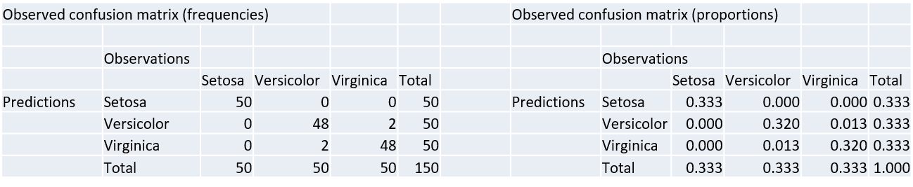
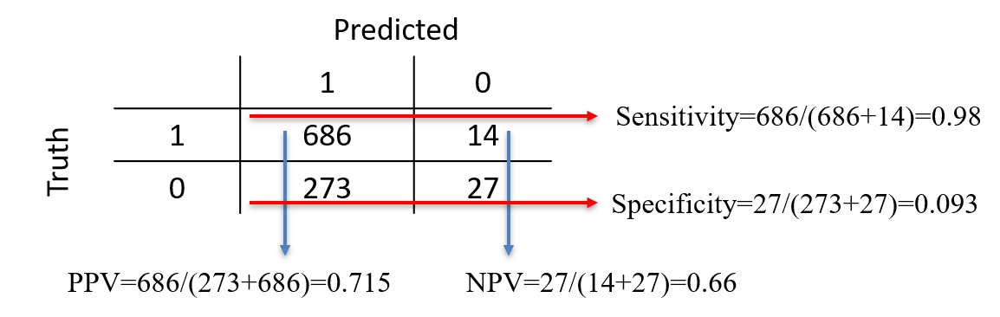
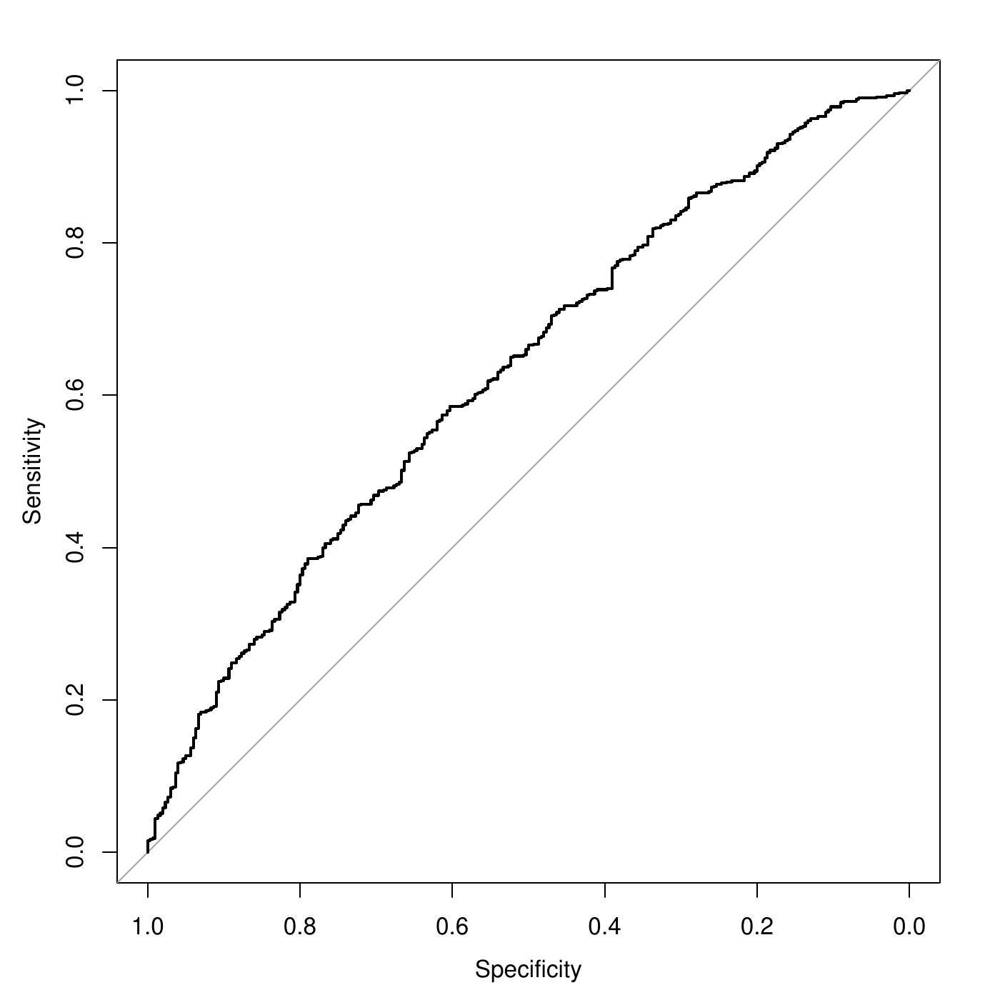

Metrics
Concept
Concept
A metric (score) is a numerical value measuring the performance of a model. To compare the different models, the metric only depends on the observed and predicted values or classes. There are two types of metrics: for regression and for classification.
Metrics for classification
Metrics for classifications
Metrics for classifications can be grouped as
Metrics based on the predicted classes only
Metrics based on the predicted probabilities
Metrics for binary classifications only
General metrics for multi-classes
Confusion matrix
The confusion matrix reports the frequencies of "observed" vs "predicted" classes. E.g., SVM with linear kernel and cost of 1, on iris data:
Reference
Prediction setosa versicolor virginica
setosa 50 0 0
versicolor 0 48 2
virginica 0 2 48All the metrics based on predicted classes can be computed from the confusion matrix.
Accuracy
The accuracy is the proportion of correct predictions of the model \[A = \sum_i n_{ii}/\sum_{ij} n_{ij}\] where \(n_{ij}\) is the number in the confusion matrix at line \(i\) and column \(j\).
For the previous SVM model, the accuracy is \[A = \frac{50+48+48}{50+2+48+48+2} = 0.973\]
Cohen’s kappa1 is a measure which compares the observed accuracy to the accuracy that one would expect from a random model.
The expected accuracy from a random model is computed as the accuracy from a table containing the expected frequencies \(n_{ij}\) if the model was random2. The expected accuracy is also called No Information Rate.
With the iris data, we have the following observations from the model:

The observed accuracy is \(A_o = 0.973\).
A random model would have balanced proportions in each cell:

where \[0.111 = 0.333\times 0.333.\] The expected accuracy is \(A_e = 0.111+0.111+0.111 = 0.333\).
The expected frequencies are not of direct use. These are the expected proportions multiplied by the total amount of instances: \[16.67 = 0.111 \times 150.\]
Cohen’s kappa
By definition, the Cohen’s kappa is \[\kappa = \frac{A_o - A_e}{1-A_e}\]
\(\kappa = 0\) if \(A_o=A_e\) when the accuracy of the model is the same as a random model (i.e., not a good model).
\(\kappa = 1\) if \(A_o=1\) when the accuracy of the model is 1 (i.e., a good model).
Intermediate values are the excess of accuracy of the model over the random model, relative to the inaccuracy of the random model (\(1-A_e\)).
In the example, \[\kappa =\frac{0.973 - 0.333}{1 - 0.333} = 0.96.\]
With a binary classification task (0/1):
| Predict 1 | Predict 0 | Total | |
|---|---|---|---|
| True 1 | \(TP\) | \(FN\) | \(P\) |
| True 0 | \(FP\) | \(TN\) | \(N\) |
| Total | \(PP\) | \(PN\) | \(M\) |
where
\(TP\): \(\#\) instances \(1\) that are predicted as \(1\): "true positives"
\(FP\): \(\#\) instances \(0\) that are predicted as \(1\): "false positives"
\(TN\): \(\#\) instances \(0\) that are predicted as \(0\): "true negatives"
\(FN\): \(\#\) instances \(1\) that are predicted as \(0\): "false negatives"
\(P\): \(\#\) instances \(1\): “positives”.
\(N\): \(\#\) instances \(0\): “negatives”.
\(PP\): \(\#\) instances predicted \(1\): “predicted positive”.
\(PN\): \(\#\) instances predicted \(0\): “predicted negative”.
The total number of instances is \(M=TP+FP+TN+FN=P+N=PP+PN\).
Metrics for binary classification
A logistic regression was fitted to a data set3. The positive class is “Good”. There are 700 "Good" and 300 "Bad" in the data set.
Pred
Obs Good Bad
Good 686 14
Bad 273 27Then, \[TP=686, \, FP=273, \, TN=27, \, FN=14\,\] and \[P=700, \, N=300, \, PP=959, \, PN=41.\]
Sensitivity
The sensitivity is the proportion of correct predicted positive among the true positives: \[\mbox{Sens}=\frac{TP}{TP+FN}=\frac{TP}{P}\] It is the probability that the model recovers a positive instance: \[Pr\left(\mbox{model predicts positive}|\mbox{positive}\right).\] It is also referred to as recall or true positive rate. E.g., with the credit data \[Sens=\frac{686}{686+14}=0.98\] The model is thus very good at recovering the positive instances.
Specificity
The specificity is the proportion of predicted negatives among the negatives: \[\mbox{Spec}=\frac{TN}{TN+FP}=\frac{TN}{N}\] Also called True Negative Rate, it is the probability that the model recovers a negative instance: \[Pr\left(\mbox{model predicts negative}|\mbox{negative}\right).\] E.g., with the credit data \[TNR=\frac{27}{27+273}=0.09\] The model is poor at recovering the negative instances.
Positive Predictive Value
The precision also called Positive Predictive Value. It is the proportion of true positives among the predicted positive: \[PPV=\frac{TP}{TP+FP}=\frac{TP}{PP}\] The precision is the probability that the prediction is correct given that the model predicted positive: \[Pr\left(\mbox{positive}|\mbox{model predicts positive}\right).\] E.g., \[PPV = \frac{686}{273+686} = 0.715\] Given that the model predicts a “positive”, the chance it is indeed a positive is 0.715.
Negative Predictive Value
It is the equivalent of the precision but for the negative class. \[NPV=\frac{TN}{FN+TN}=\frac{TN}{PN}\] It is the probability that the prediction is correct given that the model predicted it as negative: \[Pr\left(\mbox{negative}|\mbox{model predicts negative}\right).\] E.g., \[NPV = \frac{27}{14+27} = 0.66\] Given that the model predicts a “negative”, the chance it is indeed a negative is 0.66.
Summary


Balanced accuracy
One issue with the accuracy is that it is a global indicator that strongly depends on the number of positive and negative cases in the data set.
For example, with 700 positive instances out of 1000, a model always predicting “Good” would have an accuracy of 0.70: a large accuracy for such a useless model.
This is because of unbalance in the outcomes in the data4.
The balance accuracy is the accuracy computed as if the data were balanced. It ends up being the average between sensitivity and specificity: \[BA = \frac{Sens+Spec}{2}\] E.g., \(BA=(0.98+0.09)/2=0.535\), a low value: the model cannot recover negative cases.
The \(F_1\) metric
This metrics is a (harmonic) mean of the precision and the sensitivity: \[F_1 = 2 \times \frac{Prec\times Sens}{Prec+Sens}\] E.g., for the credit data \(Prec = 0.715\), \(Sens = 0.98\), thus \[F_1 = 2 \times\frac{0.715\times 0.98}{0.715+0.98} = 0.83.\] The limits are
\(F_1 = 0\) when either Prec or Sens is 0.
\(F_1 = 1\) when both Prec and Sens are 1.
The larger \(F_1\), the better the model.
The Receiver Operating Characteristic curve shows the sensitivities and the specificities of a model when the threshold for the prediction varies. E.g., the sensitivity is 0.98, and the specificity is 0.09 with a threshold of \(\lambda=0.5\): \[f(x_i;\theta)= \left\{\begin{array}{ll} 1 & \mbox{if } p(x_i;\theta) \geq 0.5,\\ 0& \mbox{if } p(x_i;\theta) < 0.5. \end{array} \right.\] What happens when the threshold \(\lambda\) ranges from 0 to 1?
If \(\lambda=0\), no cases are predicted as \(0\), thus \(Sens=1\) and \(Spec=0\).
If \(\lambda=1\), no cases are predicted as \(1\), thus \(Sens=0\) and \(Spec=1\).
The ROC curve is obtained when \(\lambda\) varies between 0 and 1, \(Spec=x\), and \(y=Sens\). The specificies are usually in the reverse order.

ROC curve and AUC
A perfect model have large sensitivity and specificity for all \(\lambda\) (except \(0\) and \(1\)). This corresponds to a single point in the upper left corner of the ROC. The diagonal in gray corresponds to the random model. The further the curve up that diagonal, the better the model. The Area Under the Curve (AUC) is the area between the diagonal and the ROC curve. The larger it is, the better the model is.E.g., \(AUC=0.628\). The ROC curve provides a way to tune the threshold for the prediction under unbalanced class: select the threshold with maximum balanced accuracy (Youden Index point). See later.
Metrics for regression
Root Mean Squared Error (RMSE)
The RMSE is the square root of the mean of the squares of the errors of prediction: \[RMSE = \sqrt{\frac{1}{n} \sum_{i=1}^n \left\{y_i - f(x_i;\theta)\right\}^2},\] The lower the RMSE, the better the model.
MSE and MAE
Other metrics:
The Mean Squared Error (MSE) is the RMSE without the square root \[MSE = RMSE^2\] It is obviously equivalent to the RMSE.
The Mean Absolute Error (MAE) is the average of the absolute errors: \[MAE = \frac{1}{n}\sum_{i=1}^n|y_i -f(x_i;\theta)|\]
RMSE and MAE
Like the median to the mean, the MAE is more robust than the RMSE:
One large error only will make the RMSE large.
The MAE is less influenced by one error.
In practice, with:
Model 1: mostly small errors except a few large ones,
Model 2: only average errors, no large one.
Then, we will probably have \[\begin{aligned} MAE(M1) &<& MAE(M2)\\ RMSE(M2) &<& RMSE(M1)\end{aligned}\]
The \(R^2\)
In the ML context, the \(R^2\) (\(R\) squared) is the square of the correlation between the observations and the predictions. \[R^2 = cor^2(y,f(x;\theta))\] The \(R^2\) is bounded between 0 and 1. The larger the \(R^2\), the better the model. The \(R^2\) is an attempt to approximate / replace the usual \(R^2\) of a linear regression. However, these two must not be confounded because they will often be different (though conveying the same idea).
Final words
Final words
There exist plethora of metrics with advantages and drawbacks.
Some can be interpreted (accuracy, sensitivity, etc.), others cannot and are used only to compare models (\(F_1\), \(RMSE\), etc.).
It is important to have a baseline model to compare the metric (e.g., random model for classification, average for regression).
For regression, a scatterplot of the observations \(y_i\) versus the predictions \(f(x_i;\theta)\) allows to analyze in more details the model quality. It is a must do!